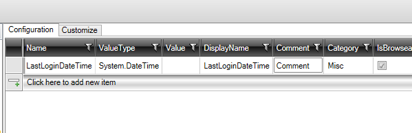

App- and User-settings
In the configuration of app and user settings, the properties to be used are defined. Below is a configuration for UserSettings.

Here, it is desired to save the date/time of when the user last logged into the system.
After "Create code", the following "UserSettings.tt.cs" has been code-generated.
public partial interface IUserSetting
{
System.DateTime LastLoginDateTime { get; set; }
}
public partial class UserSetting: IUserSetting
{
///<summary>
///Comment
///</summary>
[Category("Misc")]
[Description("Comment ")]
[DisplayName("LastLoginDateTime")]
[Browsable(true)]
[ReadOnly(false)]
public System.DateTime LastLoginDateTime { get; set; }
}
It is also possible to customize this via a partial class. There is a "Code Task" called "UserSettings" which creates a partial class in the file "UserSettings.cs". It can be customized to, for example, the following
public partial interface IUserSetting
{
}
public partial class UserSetting
{
public UserSetting()
{
this.LastLoginDateTime= DateTime.Now;
}
}
When the application closes, UserSettings are saved in the SQL database and thus when the user last logged in is saved.
Of course, it is also possible to add properties and methods.
The interface "IUserSetting" can be injected into constructors and used in various classes.
The above also applies if AppSettings need to be customized. There is the interface "IAppSetting".